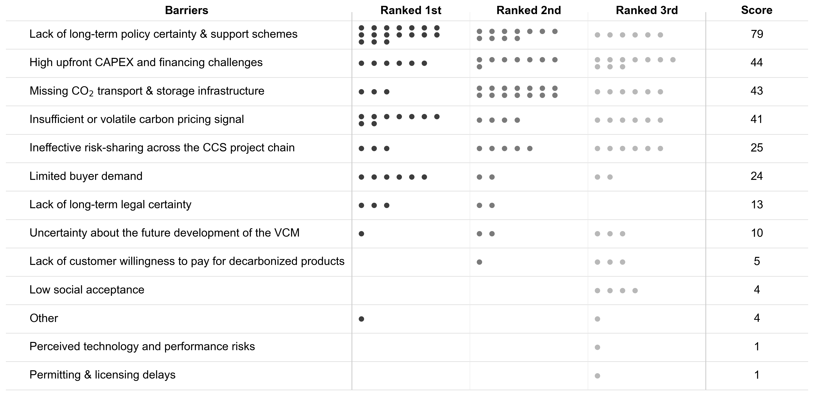
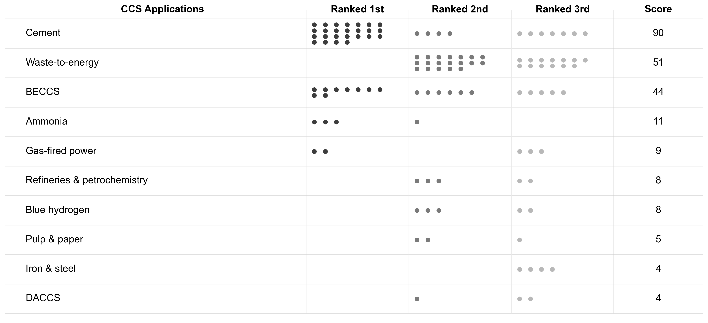
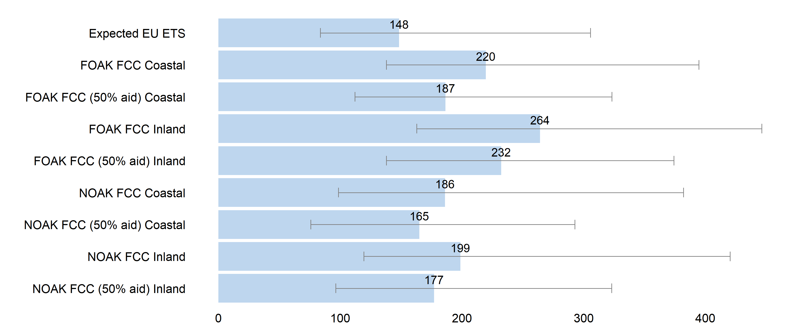
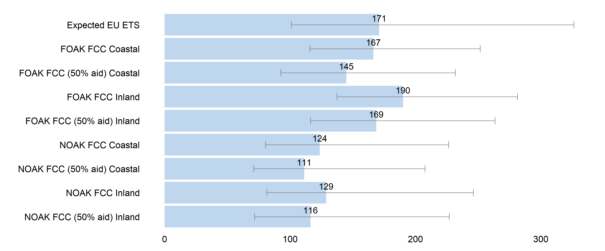
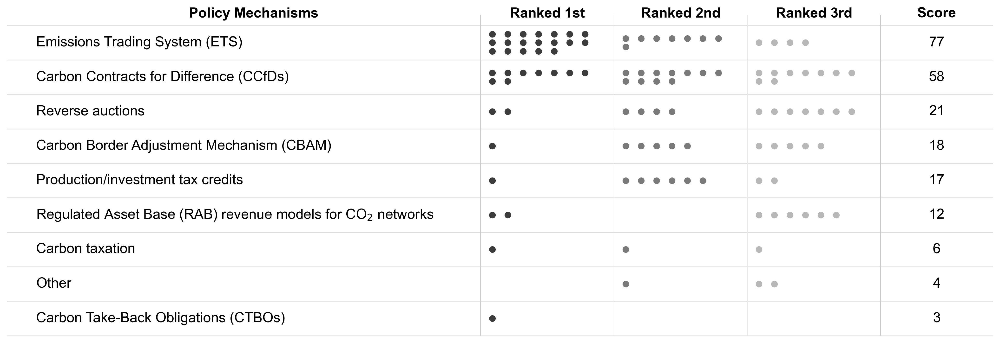

From Policy to Projects: Expert Perspectives on Barriers and Costs of European CCS Deployment
Carbon capture and storage (CCS) is central to European decarbonization pathways, yet operational capacity remains negligible: Europe's annual CCS capacity is roughly 2 Mt CO₂, less than one hundredth of the volumes its own 2050 pathways require. This thesis examines the barriers to and costs of CCS deployment in Europe through semi-structured interviews with 56 stakeholders across the CCS value chain and structured expert elicitation with two panels of eight experts each — one for bioenergy with carbon capture and storage (BECCS) and one for cement CCS.
Lack of long-term policy certainty emerged as the dominant barrier. This finding stands in tension with substantial EU and national CCS policy frameworks; the barrier is not the absence of policy but the absence of durable commitment across CCS investment horizons of 15–20 years. High upfront capital requirements and missing transport and storage infrastructure ranked next, forming a mutually reinforcing cycle: without infrastructure, costs stay high; without viable business cases, infrastructure investment stalls.
Performance-weighted cost projections reveal a sectoral divide. Cement CCS full-chain costs of €111–190/tCO₂ achieve market viability at expected EU ETS prices in seven of eight configurations. BECCS costs of €165–264/tCO₂ exceed expected prices by €17–116 in all configurations, even with 50 % CAPEX state aid. These findings imply differentiated policy architectures: reinforcement of existing carbon pricing for cement, and creation of dedicated carbon removal procurement mechanisms for BECCS.
Finding 1: The dominant barrier is a lack of durable policy commitment
Across all 56 interviews, lack of long-term policy certainty and support schemes scored nearly double the second-ranked barrier. The core problem is a structural mismatch: CCS projects require 15–20-year operational lifespans to recover capital costs, yet policy certainty rarely extends beyond a legislative period of four to five years. Experts described a first-mover dilemma in which early investors risk being undercut if regulations change, and a wait-and-see posture is individually rational even when collectively harmful.
This concern is not hypothetical. Germany’s CCfD program was cut from €27 billion to €6 billion, Sweden’s reverse auction budget was reduced, and the UK’s Track-1 model consumed allocations intended for four CCS clusters on just two projects. Each reduction validates the hesitation. The finding emerges against an extensive backdrop of EU and national policy — the EU ETS revision, the Net-Zero Industry Act, the Industrial Carbon Management Strategy — underscoring that the barrier is not the absence of policy but its fragility.
High upfront CAPEX and missing CO₂ transport and storage infrastructure ranked second and third. These barriers are mutually reinforcing: capture facilities can be built in two to three years, while storage sites require at least three to five, creating a coordination failure in which no actor is willing to move first. This circularity helps explain why, despite mounting policy support, European operational CCS capacity stands at only 2.3 Mtpa — roughly 0.6 % of projected 2050 requirements.

Finding 2: Cement is the most promising near-term application
Experts ranked cement as the most promising CCS application in Europe, followed by waste-to-energy and BECCS. For cement, there is no credible alternative decarbonization route: roughly 60 % of clinker production emissions are inherent to the calcination reaction and cannot be eliminated through fuel switching alone. This technological necessity, combined with comparatively high flue-gas CO₂ concentrations, continuous year-round operation, and regional market structures that limit import competition, makes cement the near-term deployment priority.
Waste-to-energy attracted broad support as a complementary application, in part because approximately half of its emissions are biogenic, enabling both fossil decarbonization and carbon removal from a single facility. BECCS ranked third overall — elevated by BECCS industry experts but moderated by concerns about biomass availability and the absence of a functioning revenue stream for negative emissions under the current EU ETS.

Finding 3: Cement CCS is commercially viable; BECCS is not yet
The quantitative cost analysis used Cooke’s Classical Model — a performance-weighted expert elicitation method — with two panels of eight experts each. The target variable is full-chain cost (FCC): the static carbon price an operator would need over a 15-year amortization period to break even on capture, transport, and storage combined, expressed as a CCfD strike price in €/tCO₂.
Cement CCS full-chain costs range from €111/tCO₂ (mature, coastal, with 50 % CAPEX state aid) to €190/tCO₂ (early-stage, inland, no subsidy). Cement experts projected a 15-year average EU ETS price of €171/EUA. At this price level, seven of eight cement configurations achieve a negative cost gap — meaning they are commercially viable without dedicated CCS-specific support beyond carbon pricing and infrastructure investment.
BECCS full-chain costs range from €165/tCO₂ (mature, coastal, subsidized) to €264/tCO₂ (early-stage, inland, no subsidy). BECCS experts projected a lower 15-year EU ETS price of €148/EUA, reflecting greater uncertainty about CDR market integration. No BECCS configuration achieves market viability. Even the most favorable scenario — mature, coastal, with 50 % CAPEX state aid — exceeds expected carbon prices by €17/tCO₂ (11 %). The structural gap is not a cost problem but a market creation problem: biogenic CO₂ capture is not currently recognized under the EU ETS, leaving no compliance revenue stream.


Finding 4: Cost reductions come from infrastructure, not capture technology
Both panels show substantial learning curves from first-of-a-kind (FOAK) to mature nth-of-a-kind (NOAK) deployment: 15–25 % for BECCS and 26–32 % for cement. But experts across both industries consistently attributed these reductions to transport and storage infrastructure maturation rather than capture technology improvements. As one cement project developer put it: “The nth-of-a-kind does not reduce the capture costs. This technology is mature enough.” Transitioning from ship to pipeline transport, for example, eliminates the need to liquefy CO₂, enabling savings of around €50/tCO₂ through compression and direct dispatch alone.
Inland locations benefit disproportionately from infrastructure maturation. The inland cost penalty shrinks from €44–46/tCO₂ at FOAK deployment to €5–13/tCO₂ at NOAK, as pipeline networks eliminate the need for rail-based CO₂ transport. This pattern implies that shared infrastructure development — through RAB models, direct public co-investment, or cluster approaches — is the single most effective cross-sectoral lever for reducing full-chain costs.
Finding 5: The EU ETS and CCfDs are the most important policy mechanisms
Experts ranked the EU Emissions Trading System first and carbon contracts for difference (CCfDs) second as the most important policy mechanisms for European CCS deployment. Their ordering inverted by sector: cement experts ranked CCfDs first, reflecting the need for revenue certainty over long capital cycles, while BECCS experts ranked the ETS first but elevated reverse auctions alongside CCfDs, consistent with their dependence on procurement schemes in Denmark and Sweden.
The forthcoming 2026 EU ETS revision — particularly the question of whether negative emissions will be integrated into carbon markets — was identified as the single most consequential near-term policy decision for BECCS. Without compliance market access, BECCS projects remain structurally dependent on voluntary carbon market buyers, a market currently concentrated around a single corporate purchaser and insufficient to underwrite capital-intensive investments.

Takeaway
Europe has built an extensive CCS policy architecture. The instruments required to unlock deployment — CCfDs, reverse auctions, RAB models for infrastructure, the EU ETS — exist and are operational in pioneering countries. What is missing is not the toolbox but the commitment to use it at a scale and duration commensurate with the investment decisions these instruments are designed to enable.
Cement CCS is ready for near-term deployment under existing carbon pricing frameworks, provided infrastructure is built and free allowances are phased out on schedule. BECCS requires a fundamentally different architecture: dedicated CDR procurement mechanisms, integration of negative emissions into compliance carbon markets, and long-term contracts that provide the revenue certainty no voluntary market can currently offer. Both pathways are actionable. The barrier is political will, not technology.